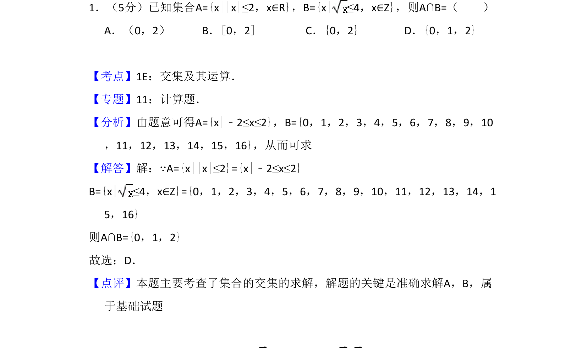
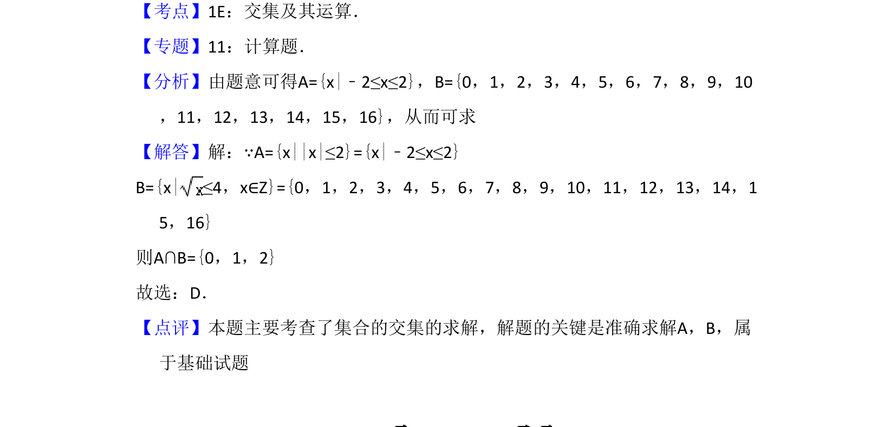

考点：交集运算 绝对值不等式 根式不等式

本题主要考查含绝对值不等式和根式不等式的集合求解及交集运算。

📄 原 PDF 第 1 页：
素材/真题/吉林/2008-2024·（吉林）数学高考真题/2010年高考数学试卷（文）（新课标）（解析卷）.pdf
1．（5分）已知集合A={x||x|≤2，x∈R}，B={x|≤4，x∈Z}，则A∩B=（ ） A．（0，2）B．[0，2]C．{0，2}D．{0，1，2}
【考点】1E：交集及其运算．菁优网版权所有 【专题】11：计算题． 【分析】由题意可得A={x|﹣2≤x≤2}，B={0，1，2，3，4，5，6，7，8，9，10 ，11，12，13，14，15，16}，从而可求 【解答】解：∵A={x||x|≤2}={x|﹣2≤x≤2} B={x|≤4，x∈Z}={0，1，2，3，4，5，6，7，8，9，10，11，12，13，14，1 5，16} 则A∩B={0，1，2} 故选：D． 【点评】本题主要考查了集合的交集的求解，解题的关键是准确求解A，B，属 于基础试题